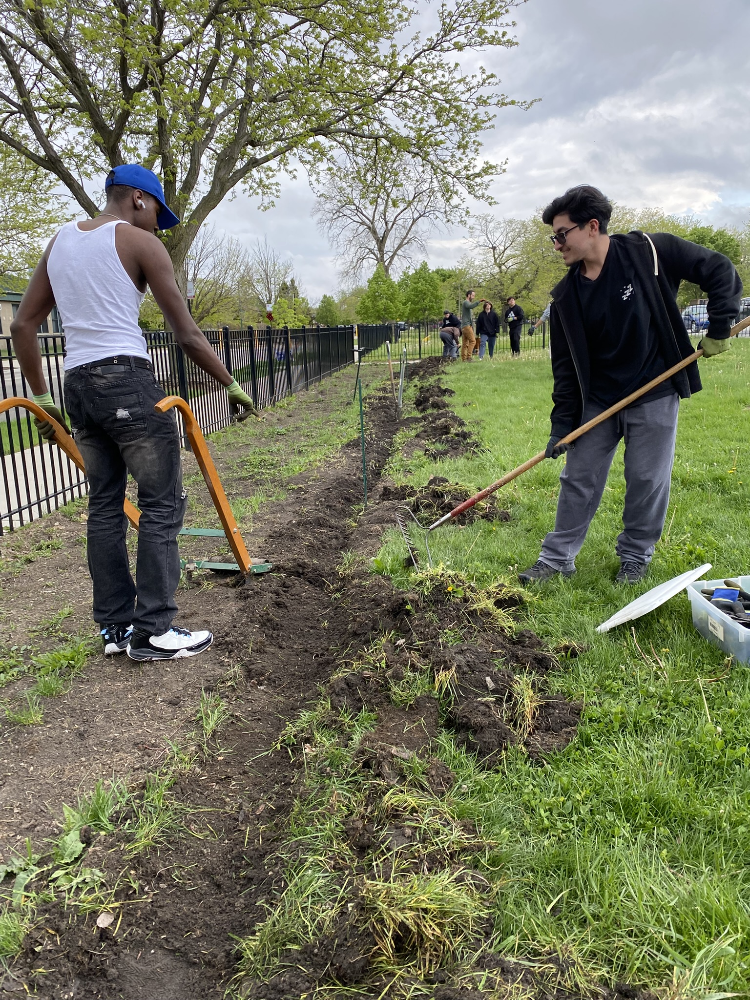
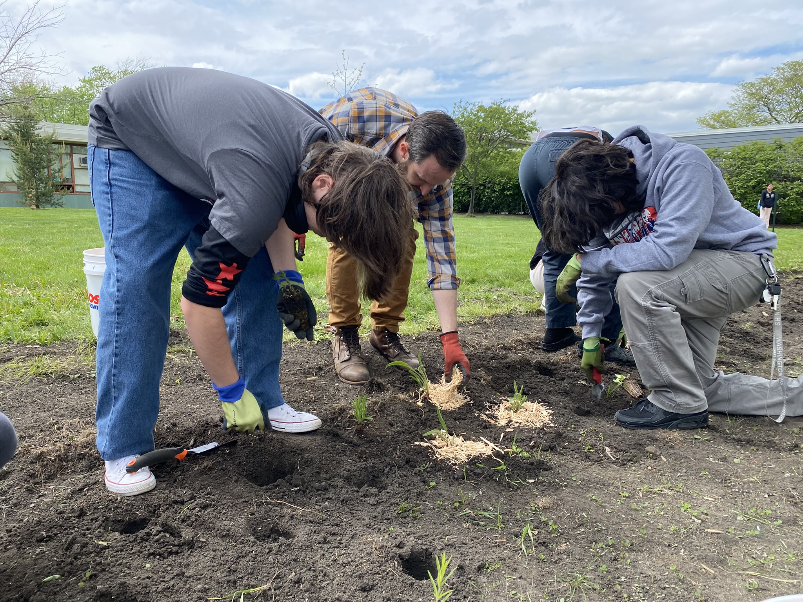

Our Mission
To cultivate and steward beautiful and accessible native plant sanctuaries in Chicago's underserved communities, restoring a sense of place, promoting healing, and empowering residents and organizations to become stewards of their natural environment.


Conservation
Open green spaces in urban areas are as important as state and national conservation areas, which are always threatened by development and resource extraction.
Fostering equity in access to green spaces
Studies on greenspaces are linked to healing and an increased sense of belonging and peace. We want to provide this to communities that live in neighborhoods that have been divested.